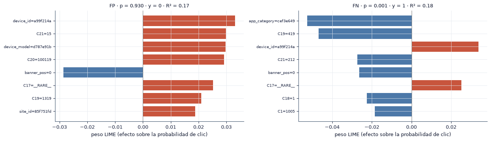
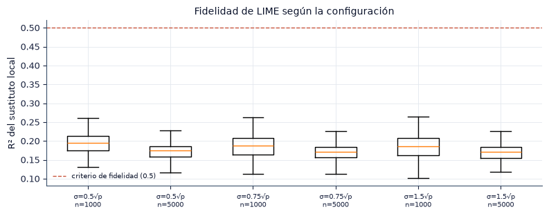
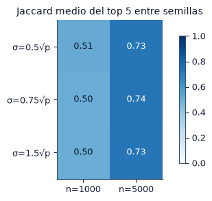
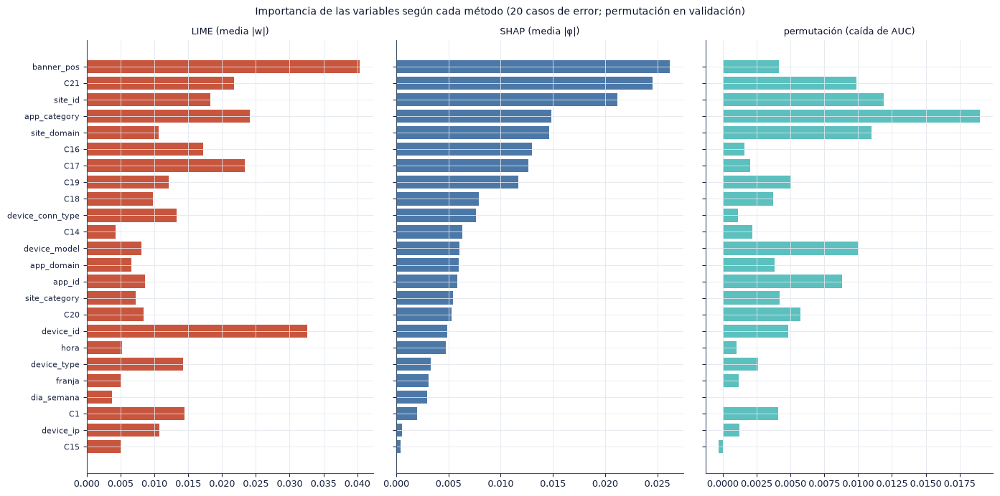

8. Interpretabilidad local con LIME#
En este capítulo explicamos predicciones individuales del MLP con LIME (Ribeiro et al., 2016), medimos la fidelidad y la estabilidad de esas explicaciones y las contrastamos con SHAP (Lundberg y Lee, 2017) y con la importancia por permutación. Aquí respondemos la pregunta P4. Los cálculos se ejecutan con python -m src.runner explain.
Cómo funciona LIME. Para explicar la predicción \(f(x)\), LIME genera perturbaciones \(z\) alrededor de \(x\), obtiene sus predicciones \(f(z)\) y ajusta un modelo lineal ponderado \(g(z) = w_0 + w^\top z'\), donde \(z'\) indica qué variables de \(z\) conservan el valor de \(x\). Los pesos de la regresión se calculan con un núcleo exponencial,
que da más peso a las perturbaciones cercanas a \(x\); \(\sigma\) es el ancho del núcleo. El coeficiente \(w_j\) estima cuánto cambia la probabilidad de clic cuando la variable \(j\) toma el valor que tiene en \(x\) frente a valores muestreados de la distribución de entrenamiento.
Fidelidad. El \(R^2\) ponderado del modelo lineal \(g\) sobre las perturbaciones mide qué tan bien la explicación reproduce al modelo en el vecindario de \(x\).
Estabilidad. Repetimos LIME con 10 semillas y comparamos los conjuntos de las 5 variables con mayor \(|w_j|\) mediante la similitud de Jaccard, \(J(A, B) = |A \cap B| / |A \cup B|\).
import sys
from pathlib import Path
ROOT = next(p for p in [Path.cwd(), *Path.cwd().parents] if (p / "src" / "config.py").exists())
if str(ROOT) not in sys.path:
sys.path.insert(0, str(ROOT))
import numpy as np
import pandas as pd
import matplotlib.pyplot as plt
from IPython.display import Markdown, display
from src import config as C
from src import plots as P
from src import report as R
from src.persist import load_json
P.setup()
C.ensure_dirs()
pd.set_option("display.precision", 4)
pd.set_option("display.max_colwidth", 90)
print("Resultados:", C.RESULTS.relative_to(C.ROOT), "| prueba de humo:", C.SMOKE)
import json
from itertools import combinations
from scipy.stats import spearmanr
from src import explain as X
ex = load_json(C.SUMMARY / "explain.json")
lime = pd.read_json(C.SUMMARY / "lime_runs.json")
casos = pd.read_csv(C.SUMMARY / "lime_casos.csv")
perm = pd.read_csv(C.SUMMARY / "permutation_importance.csv")
cols = ex["cols"]
shap_v = np.array(ex["shap"])
print(f"Modelo explicado: MLP con {C.ENCODING_LABELS[ex['encoding']]}, semilla {ex['seed']} | umbral {ex['threshold']:.3f} | "
f"casos: {len(casos)} | explicaciones LIME: {len(lime)}")
Resultados: results | prueba de humo: False
Modelo explicado: MLP con Hashing 2^14, semilla 3 | umbral 0.211 | casos: 20 | explicaciones LIME: 1200
8.1 Espacio interpretable#
Con hashing, las columnas de la entrada del MLP no tienen nombre: la columna 1873 de \(2^{14}\) mezcla pares «variable=valor» que colisionan. Por eso LIME no se aplica sobre la entrada del modelo, sino sobre un espacio reducido e interpretable:
cada una de las 24 variables originales es una variable categórica del explicador;
cada variable conserva sus 30 categorías más frecuentes en entrenamiento, y el resto se agrupa en
__RARE__;la función de predicción decodifica cada fila perturbada a texto, aplica el mismo preprocesamiento del modelo (raras y codificación) y devuelve la probabilidad del MLP.
La correspondencia hacia las variables originales es directa: cada peso de LIME se refiere a una variable original y a un valor concreto. El costo de esta reducción es que el modelo se evalúa sobre entradas simplificadas; medimos cuánto cambia su desempeño al pasar por el espacio interpretable.
fe = ex["fidelidad_espacio"]
display(pd.Series({"AUC con la entrada original": fe["auc_original"], "AUC en el espacio interpretable": fe["auc_espacio_interpretable"],
"correlación de probabilidades": fe["corr_pearson_prob"]}, name="validación (muestra)").to_frame().round(4))
R.findings(
f"Al pasar por el espacio interpretable, el AUC del MLP en validación cambia de {fe['auc_original']:.4f} a {fe['auc_espacio_interpretable']:.4f} "
f"y la correlación entre las probabilidades es {fe['corr_pearson_prob']:.3f}.",
{"Preprocesamiento": "el espacio interpretable conserva las categorías más frecuentes; los identificadores de alta cardinalidad quedan mayoritariamente en `__RARE__`.",
"Modelado": "las explicaciones describen al modelo evaluado en ese espacio; cuanto más alta la correlación, más se parecen al modelo original.",
"Riesgos": "la contribución de los identificadores raros (por ejemplo, `device_ip`) se subrepresenta, porque sus valores concretos no existen en el espacio interpretable."})
| validación (muestra) | |
|---|---|
| AUC con la entrada original | 0.7463 |
| AUC en el espacio interpretable | 0.7104 |
| correlación de probabilidades | 0.8128 |
Hallazgos y decisiones
Al pasar por el espacio interpretable, el AUC del MLP en validación cambia de 0.7463 a 0.7104 y la correlación entre las probabilidades es 0.813.
Preprocesamiento: el espacio interpretable conserva las categorías más frecuentes; los identificadores de alta cardinalidad quedan mayoritariamente en
__RARE__.Modelado: las explicaciones describen al modelo evaluado en ese espacio; cuanto más alta la correlación, más se parecen al modelo original.
Riesgos: la contribución de los identificadores raros (por ejemplo,
device_ip) se subrepresenta, porque sus valores concretos no existen en el espacio interpretable.
8.2 Casos explicados#
Elegimos los casos de forma sistemática en el día de prueba, con el umbral de validación: los 10 falsos positivos con mayor probabilidad predicha y los 10 falsos negativos con menor probabilidad predicha, es decir, los errores cometidos con mayor confianza.
show_cols = ["tipo", "p", "x_site_category", "x_app_category", "x_device_type", "x_banner_pos", "x_hora", "x_C1"]
display(casos[[c for c in show_cols if c in casos]].rename(columns=lambda s: s.replace("x_", "")).round(4))
| tipo | p | site_category | app_category | device_type | banner_pos | hora | C1 | |
|---|---|---|---|---|---|---|---|---|
| 0 | FP | 0.9302 | 50e219e0 | 0f2161f8 | 1 | 0 | 12 | 1005 |
| 1 | FP | 0.9194 | 50e219e0 | 0f2161f8 | 1 | 0 | 9 | 1005 |
| 2 | FP | 0.9127 | 50e219e0 | 0f2161f8 | 1 | 0 | 17 | 1005 |
| 3 | FP | 0.9051 | 50e219e0 | 0f2161f8 | 1 | 0 | 20 | 1005 |
| 4 | FP | 0.8967 | 50e219e0 | 0f2161f8 | 1 | 0 | 6 | 1005 |
| 5 | FP | 0.8898 | 50e219e0 | 0f2161f8 | 4 | 7 | 21 | 1010 |
| 6 | FP | 0.8852 | 50e219e0 | 0f2161f8 | 4 | 7 | 17 | 1010 |
| 7 | FP | 0.8828 | 50e219e0 | 0f2161f8 | 4 | 7 | 21 | 1010 |
| 8 | FP | 0.8821 | 50e219e0 | 0f2161f8 | 1 | 0 | 18 | 1005 |
| 9 | FP | 0.8769 | 50e219e0 | 0f2161f8 | 1 | 0 | 15 | 1005 |
| 10 | FN | 0.0009 | 50e219e0 | cef3e649 | 1 | 0 | 11 | 1005 |
| 11 | FN | 0.0011 | f028772b | 07d7df22 | 1 | 0 | 4 | 1005 |
| 12 | FN | 0.0011 | 75fa27f6 | 07d7df22 | 1 | 0 | 15 | 1005 |
| 13 | FN | 0.0011 | 75fa27f6 | 07d7df22 | 1 | 0 | 15 | 1005 |
| 14 | FN | 0.0011 | 75fa27f6 | 07d7df22 | 1 | 0 | 15 | 1005 |
| 15 | FN | 0.0012 | f028772b | 07d7df22 | 1 | 0 | 8 | 1005 |
| 16 | FN | 0.0012 | f66779e6 | 07d7df22 | 1 | 1 | 7 | 1005 |
| 17 | FN | 0.0016 | 75fa27f6 | 07d7df22 | 1 | 0 | 1 | 1005 |
| 18 | FN | 0.0017 | 28905ebd | 07d7df22 | 1 | 0 | 9 | 1005 |
| 19 | FN | 0.0018 | 50e219e0 | cef3e649 | 1 | 0 | 17 | 1005 |
8.3 Explicaciones locales#
Mostramos la explicación del falso positivo y del falso negativo más confiados, con la configuración por defecto de LIME (ancho del núcleo \(0.75\sqrt{p}\), con \(p = 24\) variables) y 5000 perturbaciones. Cada barra es el peso \(w_j\) del valor que la variable toma en el caso.
NS = max(C.LIME_NUM_SAMPLES)
def pesos(caso, kernel=0.75, ns=NS, semilla=0):
r = lime[(lime["caso"] == caso) & (lime["kernel"] == kernel) & (lime["num_samples"] == ns) & (lime["semilla"] == semilla)].iloc[0]
return pd.Series(r["pesos"]), r["r2"], r["pred_local"]
idx_fp = casos.index[casos["tipo"] == "FP"][0]
idx_fn = casos.index[casos["tipo"] == "FN"][0]
fig, axes = plt.subplots(1, 2, figsize=(13, 3.8))
for ax, i in zip(axes, [idx_fp, idx_fn]):
w, r2, pl_ = pesos(i)
w = w.reindex(w.abs().sort_values(ascending=False).index)[:8][::-1]
labels = [f"{v}={casos.loc[i, 'x_' + v]}" for v in w.index]
ax.barh(labels, w.values, color=[C.ACCENT if x > 0 else C.BAR for x in w.values])
ax.axvline(0, c="gray", lw=0.8)
ax.set_title(f"{casos.loc[i, 'tipo']} · p = {casos.loc[i, 'p']:.3f} · y = {int(casos.loc[i, 'y'])} · R² = {r2:.2f}", fontsize=9)
ax.set_xlabel("peso LIME (efecto sobre la probabilidad de clic)"); ax.tick_params(axis="y", labelsize=7)
fig.tight_layout(); P.save(fig, "8_3_lime_casos"); plt.show()

8.4 Fidelidad y sensibilidad a la configuración#
Calculamos el \(R^2\) del modelo sustituto para los 20 casos, las 10 semillas y cada combinación de ancho del núcleo (\(0.5\), \(0.75\) y \(1.5\) veces \(\sqrt{p}\)) y número de perturbaciones (1000 y 5000).
fid = lime.groupby(["kernel", "num_samples"])["r2"].agg(["median", "mean", "std", "min", "max"])
display(fid.round(3))
fig, ax = plt.subplots(figsize=(8, 3.2))
grupos = list(fid.index)
ax.boxplot([lime[(lime["kernel"] == k) & (lime["num_samples"] == n)]["r2"] for k, n in grupos], showfliers=False)
ax.set_xticks(range(1, len(grupos) + 1), [f"σ={k}√p\nn={n}" for k, n in grupos], fontsize=7)
ax.axhline(0.5, c=C.ACCENT, ls="--", lw=1, label="criterio de fidelidad (0.5)")
ax.set_ylabel("R² del sustituto local"); ax.set_title("Fidelidad de LIME según la configuración"); ax.legend(fontsize=7)
fig.tight_layout(); P.save(fig, "8_4_fidelidad"); plt.show()
| median | mean | std | min | max | ||
|---|---|---|---|---|---|---|
| kernel | num_samples | |||||
| 0.50 | 1000 | 0.195 | 0.194 | 0.026 | 0.117 | 0.285 |
| 5000 | 0.175 | 0.167 | 0.029 | 0.091 | 0.227 | |
| 0.75 | 1000 | 0.188 | 0.185 | 0.031 | 0.113 | 0.284 |
| 5000 | 0.172 | 0.165 | 0.031 | 0.081 | 0.226 | |
| 1.50 | 1000 | 0.185 | 0.182 | 0.034 | 0.101 | 0.284 |
| 5000 | 0.171 | 0.163 | 0.032 | 0.078 | 0.226 |

8.5 Estabilidad#
Para cada caso y configuración calculamos la similitud de Jaccard media entre los conjuntos de las 5 variables principales de las 10 repeticiones (45 pares).
def top5(d):
s = pd.Series(d)
return set(s.abs().sort_values(ascending=False).index[:C.LIME_TOP_FEATURES])
est = (lime.assign(top=lime["pesos"].map(top5)).groupby(["caso", "tipo", "kernel", "num_samples"])["top"]
.apply(lambda s: X.mean_pairwise_jaccard(list(s))).rename("jaccard").reset_index())
tab_est = est.pivot_table(index="kernel", columns="num_samples", values="jaccard", aggfunc="mean")
display(tab_est.round(3))
fig, ax = plt.subplots(figsize=(5, 3))
im = ax.imshow(tab_est.values, cmap="Blues", vmin=0, vmax=1); ax.grid(False)
ax.set_xticks(range(tab_est.shape[1]), [f"n={c}" for c in tab_est.columns]); ax.set_yticks(range(tab_est.shape[0]), [f"σ={k}√p" for k in tab_est.index])
for i in range(tab_est.shape[0]):
for j in range(tab_est.shape[1]):
ax.text(j, i, f"{tab_est.iat[i, j]:.2f}", ha="center", va="center", color="white" if tab_est.iat[i, j] > 0.6 else "#0B132B")
ax.set_title("Jaccard medio del top 5 entre semillas"); fig.colorbar(im, ax=ax, shrink=0.8)
fig.tight_layout(); P.save(fig, "8_5_estabilidad"); plt.show()
| num_samples | 1000 | 5000 |
|---|---|---|
| kernel | ||
| 0.50 | 0.515 | 0.728 |
| 0.75 | 0.504 | 0.737 |
| 1.50 | 0.501 | 0.730 |

d_ = (0.75, NS)
r2_def = lime[(lime["kernel"] == d_[0]) & (lime["num_samples"] == d_[1])]["r2"].median()
j_def = tab_est.loc[d_[0], d_[1]]
mejor = tab_est.stack().idxmax()
R.findings(
f"Con la configuración por defecto y {NS} perturbaciones, el $R^2$ mediano es {r2_def:.3f} y el Jaccard medio del top 5 es {j_def:.3f}. "
f"La configuración más estable es σ = {mejor[0]}√p con {mejor[1]} perturbaciones (Jaccard {tab_est.loc[mejor]:.3f}). "
f"Aumentar las perturbaciones de {min(C.LIME_NUM_SAMPLES)} a {max(C.LIME_NUM_SAMPLES)} cambia el Jaccard medio en "
f"{(tab_est[max(C.LIME_NUM_SAMPLES)] - tab_est[min(C.LIME_NUM_SAMPLES)]).mean():+.3f}.",
{"Criterio de P4": ("las explicaciones cumplen ambos criterios declarados (Jaccard ≥ 0.8 y R² ≥ 0.5)." if (j_def >= 0.8 and r2_def >= 0.5) else
"las explicaciones no cumplen los dos criterios declarados con la configuración por defecto: "
+ ("son estables pero " if j_def >= 0.8 else "no son estables (Jaccard < 0.8) y ")
+ ("fieles." if r2_def >= 0.5 else "el sustituto lineal explica menos de la mitad de la variación local (R² < 0.5).")),
"Modelado": "la inestabilidad proviene del muestreo aleatorio de las perturbaciones: con pocas perturbaciones, variables con pesos parecidos intercambian su lugar en el top 5.",
"Riesgos": "una explicación inestable puede cambiar de una ejecución a otra con la misma entrada; reportar una sola ejecución de LIME sin fijar la semilla no es reproducible."})
Hallazgos y decisiones
Con la configuración por defecto y 5000 perturbaciones, el \(R^2\) mediano es 0.172 y el Jaccard medio del top 5 es 0.737. La configuración más estable es σ = 0.75√p con 5000 perturbaciones (Jaccard 0.737). Aumentar las perturbaciones de 1000 a 5000 cambia el Jaccard medio en +0.225.
Criterio de P4: las explicaciones no cumplen los dos criterios declarados con la configuración por defecto: no son estables (Jaccard < 0.8) y el sustituto lineal explica menos de la mitad de la variación local (R² < 0.5).
Modelado: la inestabilidad proviene del muestreo aleatorio de las perturbaciones: con pocas perturbaciones, variables con pesos parecidos intercambian su lugar en el top 5.
Riesgos: una explicación inestable puede cambiar de una ejecución a otra con la misma entrada; reportar una sola ejecución de LIME sin fijar la semilla no es reproducible.
8.6 Contraste con SHAP y con la importancia por permutación#
SHAP asigna a cada variable su valor de Shapley: la contribución media de la variable a la predicción, promediada sobre todos los órdenes en que pueden agregarse las variables (Lundberg y Lee, 2017). Usamos el explicador por permutaciones de la librería shap en el mismo espacio interpretable, con 100 filas de entrenamiento como fondo. A diferencia de LIME, los valores de Shapley cumplen la propiedad de eficiencia: suman la diferencia entre la predicción del caso y la predicción media del fondo.
Importancia por permutación. Es una medida global: la caída del ROC AUC en validación cuando se permutan al azar los valores de una variable, promediada en 5 repeticiones.
Comparamos los métodos en dos niveles: por caso, con la correlación de Spearman entre \(|w_j|\) de LIME (media de las 10 semillas, configuración por defecto) y \(|\phi_j|\) de SHAP; y de forma global, con el orden de las variables según cada método.
lime_def = lime[(lime["kernel"] == 0.75) & (lime["num_samples"] == NS)]
W = np.array([[np.mean([abs(p.get(c, 0.0)) for p in lime_def[lime_def["caso"] == i]["pesos"]]) for c in cols] for i in range(len(casos))])
S = np.abs(shap_v)
por_caso = pd.DataFrame({"caso": range(len(casos)), "tipo": casos["tipo"],
"Spearman |LIME| vs |SHAP|": [spearmanr(W[i], S[i]).statistic for i in range(len(casos))],
"Jaccard top 5 LIME vs SHAP": [X.jaccard(set(np.argsort(-W[i])[:5]), set(np.argsort(-S[i])[:5])) for i in range(len(casos))]})
display(por_caso.groupby("tipo")[["Spearman |LIME| vs |SHAP|", "Jaccard top 5 LIME vs SHAP"]].agg(["mean", "min", "max"]).round(3))
glob = pd.DataFrame({"LIME (media |w|)": W.mean(0), "SHAP (media |φ|)": S.mean(0)}, index=cols)
glob = glob.join(perm.set_index("variable")["caida_auc"].rename("permutación (caída de AUC)"))
rk = glob.rank(ascending=False).astype(int).add_prefix("rango ")
display(pd.concat([glob.round(4), rk], axis=1).sort_values("rango SHAP (media |φ|)").head(12))
corr = glob.corr(method="spearman")
display(corr.round(3))
fig, axes = plt.subplots(1, 3, figsize=(14, 7), sharey=True)
orden = glob["SHAP (media |φ|)"].sort_values().index
for ax, (col, cc) in zip(axes, [("LIME (media |w|)", C.ACCENT), ("SHAP (media |φ|)", C.BAR), ("permutación (caída de AUC)", "#5BC0BE")]):
ax.barh(orden, glob.loc[orden, col], color=cc); ax.set_title(col, fontsize=9); ax.tick_params(axis="y", labelsize=8)
fig.suptitle("Importancia de las variables según cada método (20 casos de error; permutación en validación)", fontsize=10)
fig.tight_layout(); P.save(fig, "8_6_lime_shap_permutacion"); plt.show()
| Spearman |LIME| vs |SHAP| | Jaccard top 5 LIME vs SHAP | |||||
|---|---|---|---|---|---|---|
| mean | min | max | mean | min | max | |
| tipo | ||||||
| FN | 0.456 | 0.368 | 0.575 | 0.304 | 0.25 | 0.429 |
| FP | 0.398 | 0.100 | 0.586 | 0.393 | 0.25 | 0.429 |
| LIME (media |w|) | SHAP (media |φ|) | permutación (caída de AUC) | rango LIME (media |w|) | rango SHAP (media |φ|) | rango permutación (caída de AUC) | |
|---|---|---|---|---|---|---|
| banner_pos | 0.0404 | 0.0262 | 0.0042 | 1 | 1 | 11 |
| C21 | 0.0218 | 0.0245 | 0.0099 | 5 | 2 | 5 |
| site_id | 0.0183 | 0.0212 | 0.0119 | 6 | 3 | 2 |
| app_category | 0.0241 | 0.0149 | 0.0190 | 3 | 4 | 1 |
| site_domain | 0.0106 | 0.0146 | 0.0110 | 13 | 5 | 3 |
| C16 | 0.0172 | 0.0130 | 0.0016 | 7 | 6 | 18 |
| C17 | 0.0234 | 0.0127 | 0.0020 | 4 | 7 | 17 |
| C19 | 0.0121 | 0.0117 | 0.0051 | 11 | 8 | 8 |
| C18 | 0.0098 | 0.0079 | 0.0037 | 14 | 9 | 14 |
| device_conn_type | 0.0133 | 0.0077 | 0.0011 | 10 | 10 | 21 |
| C14 | 0.0043 | 0.0063 | 0.0022 | 23 | 11 | 16 |
| device_model | 0.0081 | 0.0061 | 0.0100 | 17 | 12 | 4 |
| LIME (media |w|) | SHAP (media |φ|) | permutación (caída de AUC) | |
|---|---|---|---|
| LIME (media |w|) | 1.000 | 0.564 | 0.443 |
| SHAP (media |φ|) | 0.564 | 1.000 | 0.570 |
| permutación (caída de AUC) | 0.443 | 0.570 | 1.000 |

rho_ls = corr.loc["LIME (media |w|)", "SHAP (media |φ|)"]
rho_sp = corr.loc["SHAP (media |φ|)", "permutación (caída de AUC)"]
top_lime = glob["LIME (media |w|)"].idxmax(); top_shap = glob["SHAP (media |φ|)"].idxmax(); top_perm = glob["permutación (caída de AUC)"].idxmax()
R.findings(
f"Por caso, la correlación de Spearman media entre LIME y SHAP es {por_caso['Spearman |LIME| vs |SHAP|'].mean():.2f} y el Jaccard medio de "
f"sus top 5 es {por_caso['Jaccard top 5 LIME vs SHAP'].mean():.2f}. En el agregado, el orden de LIME y el de SHAP tienen ρ = {rho_ls:.2f}, "
f"y SHAP y la permutación ρ = {rho_sp:.2f}. La variable más importante es `{top_lime}` para LIME, `{top_shap}` para SHAP y `{top_perm}` "
"para la permutación.",
{"Coherencia": ("los métodos coinciden en las variables principales." if len({top_lime, top_shap, top_perm}) == 1 else
"los métodos no coinciden en la variable principal; la explicación depende del método elegido."),
"Modelado": "LIME y SHAP explican casos individuales; la permutación mide el efecto global sobre el AUC. Una variable puede pesar mucho en los errores confiados y poco en el desempeño global.",
"Riesgos": "SHAP con fondo independiente rompe las dependencias entre variables (por ejemplo, entre `site_id` y `site_domain`) y evalúa al modelo en combinaciones poco realistas; LIME tiene el mismo problema al muestrear cada variable por separado."})
Hallazgos y decisiones
Por caso, la correlación de Spearman media entre LIME y SHAP es 0.43 y el Jaccard medio de sus top 5 es 0.35. En el agregado, el orden de LIME y el de SHAP tienen ρ = 0.56, y SHAP y la permutación ρ = 0.57. La variable más importante es banner_pos para LIME, banner_pos para SHAP y app_category para la permutación.
Coherencia: los métodos no coinciden en la variable principal; la explicación depende del método elegido.
Modelado: LIME y SHAP explican casos individuales; la permutación mide el efecto global sobre el AUC. Una variable puede pesar mucho en los errores confiados y poco en el desempeño global.
Riesgos: SHAP con fondo independiente rompe las dependencias entre variables (por ejemplo, entre
site_idysite_domain) y evalúa al modelo en combinaciones poco realistas; LIME tiene el mismo problema al muestrear cada variable por separado.